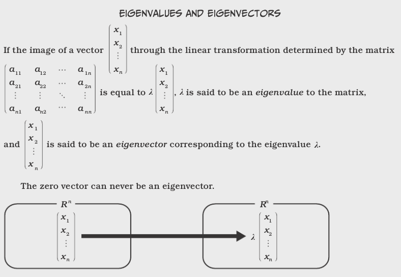

15) Eigenvectors and Eigenvalues¶
Related references:
One of the most important problems in linear algebra:¶
(also called a characteristic value or latent root), and x is the corresponding eigenvector or characteristic vector. We disregard the trivial solution of x = 0 and \(\lambda = 0\).
Thus, multiplying x by A scales x by \(\lambda\).
The set of eigenvalues is called the spectrum of A. The largest of the absolute values of the eigenvalues of A is called the spectral radius of A.
The set of all eigenvectors corresponding to an eigenvalue of A, together with 0, forms a vector space called the eigenspace of A corresponding to this eigenvalue.
The problem of determining eigenvalues and eigenvectors (called an eigenvalue problem) has many applications, some of which we will discuss after getting through some terminology and mechanics.
 This and other comics from The Manga Guide to Linear Algebra
But how do we solve these equations?¶
We rearrange our system of
And Cramer’s Theorem (covered last lecture) states that this homogeneous system of equations has a nontrivial solution if and only if the corresponding determinant of the coefficients is zero.
This special determinent, \(D(\lambda)\), is called the characteristic determinant:

Eigen

Eigen
In this case, the characteristic determinant is:
After expanding, we get the characteristic equation or characterisic polynomial:
Theorem: The eigenvalues of a square matrix A are the roots of the characteristic equation of A. Hence an \(n \times n\) matrix has at least one eigenvalue and at most \(n\) numerically different eigenvalues.
Eigenvalues are determined first. Then we find the eigenvectors.
Theorem: If x is an eigenvector of a matrix A corresponding to an eigenvalue \(\lambda\), so is \(k\)x with any \(k \neq 0\).
Eigen
In [1]:
# Even easier: make the computer compute them!
import numpy as np
a = np.array([[8, -3], [2, 1]])
eigenvalues, eigenvectors = np.linalg.eig(a)
In [2]:
print(eigenvalues)
[ 7. 2.]
In [3]:
# eigenvectors are normalized (unit “length”) eigenvectors
print(eigenvectors)
[[ 0.9486833 0.4472136 ]
[ 0.31622777 0.89442719]]
In [4]:
eigval1 = eigenvalues[0]
eigval2 = eigenvalues[1]
# eigenvectors are displayed such that the column v[:,i] is
# the eigenvector corresponding to the eigenvalue w[i].
eigvec1 = eigenvectors[:, 0]
eigvec2 = eigenvectors[:, 1]
In [5]:
# Always a good idea to check our work:
left_check = np.matmul(a, eigvec1)
right_check = eigval1 * eigvec1
if np.allclose(left_check, right_check):
print("The first eigenvalue ({}) \n "
"pairs with eigenvector {}".format(eigval1, eigvec1))
The first eigenvalue (7.0)
pairs with eigenvector [ 0.9486833 0.31622777]
In [6]:
left_check = np.matmul(a, eigvec2)
right_check = eigval2 * eigvec2
if np.allclose(left_check, right_check):
print("The first eigenvalue ({}) \n "
"pairs with eigenvector {}".format(eigval2, eigvec2))
The first eigenvalue (2.0)
pairs with eigenvector [ 0.4472136 0.89442719]
All diagonalizable \(n\times n\) matrices always have \(n\) linearly independent eigenvectors. In other words, there is always a basis in \(R^n\) consisting solely of eigenvectors, called an eigenbasis.
However, there are not always \(n\) unique eigenvalues!
In [7]:
a = np.array([[-2, 2, -3], [2, 1, -6], [-1, -2, 0]])
eigenvalues, eigenvectors = np.linalg.eig(a)
print(eigenvalues)
[-3. 5. -3.]
How does this happen?
In [8]:
mult_sol_d = a + 3*np.eye(3)
print(mult_sol_d)
[[ 1. 2. -3.]
[ 2. 4. -6.]
[-1. -2. 3.]]
Which reduces to:
From this we can get 2 linearly independent eigenvectors if we use $x_2 =1 $ and \(x_3 = 1\) for one eigenvector with eigenvalue of -3, and use \(x_2 = 0\) and \(x_3 = 1\) for the other. That is:
Those are not the only bases that can be used. Let’s see what NumPy chose, and then validate the solutions.
In [9]:
print(eigenvectors)
[[-0.95257934 0.40824829 -0.05430304]
[ 0.27216553 0.81649658 0.83908241]
[-0.13608276 -0.40824829 0.54128726]]
In [10]:
for i in range(3):
left_check = np.matmul(a, eigenvectors[:, i])
right_check = eigenvalues[i] * eigenvectors[:,i]
if np.allclose(left_check, right_check):
print("The eigenvalue {:.2f} \n "
"pairs with eigenvector {}".format(eigenvalues[i],
eigenvectors[:, i]))
else:
print(left_check)
print(right_check)
The eigenvalue -3.00
pairs with eigenvector [-0.95257934 0.27216553 -0.13608276]
The eigenvalue 5.00
pairs with eigenvector [ 0.40824829 0.81649658 -0.40824829]
The eigenvalue -3.00
pairs with eigenvector [-0.05430304 0.83908241 0.54128726]
In [11]:
# Now validating our hand solution:
x_0 = np.array([-2, 1, 0])
x_2 = np.array([3, 0, 1])
left_check = np.matmul(a, x_0)
right_check = eigenvalues[0] * x_0
if np.allclose(left_check, right_check):
print("The eigenvalue {:.2f} \n could alternately pair"
"with eigenvector {}".format(eigenvalues[0], x_0))
left_check = np.matmul(a, x_2)
right_check = eigenvalues[2] * x_2
if np.allclose(left_check, right_check):
print(" and the orthogonal "
"eigenvector {}".format(x_2))
The eigenvalue -3.00
could alternately pairwith eigenvector [-2 1 0]
and the orthogonal eigenvector [3 0 1]
The order \(M_A\) of an eigenvalue \(\lambda\) as a root of the characteristic polynomial is the algebraic multiplicity of \(\lambda\).
The number \(m_{\lambda}\) of linearly independent eigenvectors corresponding to \(\lambda\) is the geometric multiplicity of \(\lambda\). Thus, \(m_{\lambda}\) is the dimension of the eigenspace corresponding to this \(\lambda\).
Since the characteristic polynomial has degree \(n\), the sum of all algebraic multiplicities must equal \(n\).
Can real matrices get complex?¶
In [12]:
a = np.array([[0, 1], [-1, 0]])
eigenvalues, eigenvectors = np.linalg.eig(a)
print(eigenvalues)
[ 0.+1.j 0.-1.j]
In [13]:
print(eigenvectors)
[[ 0.70710678+0.j 0.70710678-0.j ]
[ 0.00000000+0.70710678j 0.00000000-0.70710678j]]
In general, for $ :raw-latex:`\mathbf{A}` = :raw-latex:`\left[ \begin{array}{cc} a & b \\ -b & a \end{array} \right] `$, $ :raw-latex:`mathbf{A}`$ has eigenvectors \(a +ib\) and \(a-ib\).
Next up: Basic stats and probability!
Permutations¶
Choosing three from n items in a certain order creates a permutation of the chosen items. The number of possible permutations of k objects chosen among n objects is written as: $ _nP_k $ The number of ways k objects can be chosen among n possible ones is equal to:
Combinations¶
Choosing k among n items without considering the order in which they are chosen is called a combination. The number of different ways this can be done is written by using the binomial coefficient notation: $ {n:raw-latex:choose `k} $ or :math:`_nC_r which is read “n choose k.”
When the order doesn’t matter, it is a Combination.
When the order does matter it is a Permutation.  A Permutation
is an ordered Combination.
A Permutation
is an ordered Combination.